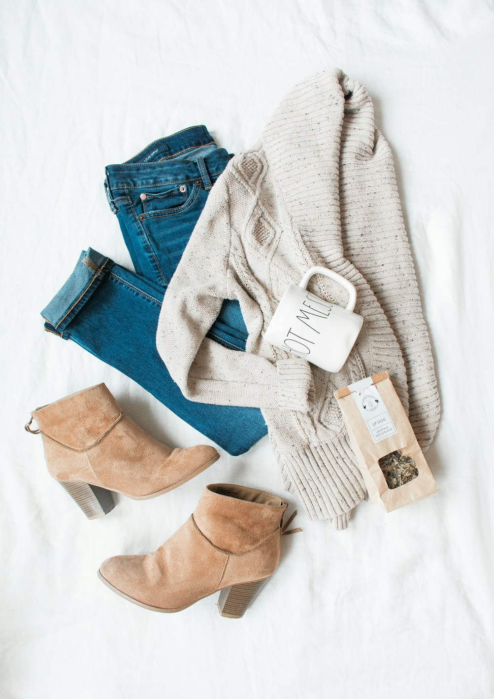

1. The Micro-Morphology of Bamboo Cellulose Fibers
Human feet possess one of the highest concentrations of sweat glands in the human body—over 250,000 eccrine glands producing up to 250 milliliters of perspiration during an active day. In standard footwear environments, this moisture becomes trapped inside the shoe micro-climate, creating a humid incubator that breeds bacteria, accelerates blister formation, and causes thermal discomfort. The fundamental cornerstone of comfortable hosiery lies in the microscopic architecture of its constituent yarn.
Unlike conventional cotton fibers, which possess a flat, twisted ribbon-like morphology with a solid core, or synthetic polyester filaments, which are smooth, solid petroleum extrusions, regenerated organic bamboo cellulose fibers exhibit a unique cross-sectional micro-structure. Under scanning electron microscopy (SEM), bamboo fibers reveal thousands of microscopic hollow cavities and longitudinal micro-grooves distributed throughout the fiber wall.
At Bamboo Knit Reef, we harvest organically grown Moso bamboo (Phyllostachys edulis) and process it using a closed-loop mechanical and enzymatic Lyocell-type method that preserves these natural micro-voids, producing a yarn that behaves as an active biophysical capillary pump.
2. Capillary Action and Moisture Vapor Transmission (MVTR)
The movement of liquid moisture through a textile is governed by the classical Lucas-Washburn equation for capillary flow in porous media:
L(t) = √ [ (r γ cos θ · t) ÷ (2 η) ]
Where $r$ represents the microscopic pore radius, $\gamma$ the surface tension of perspiration, $ heta$ the dynamic contact angle, and $\eta$ the fluid viscosity. Because bamboo cellulose possesses hydrophilic hydroxyl (-OH) polymer chains combined with micro-gap channels, perspiration is drawn away from the skin surface within milliseconds through powerful capillary pressure.
The 4x Moisture Advantage: In standardized moisture vapor transmission rate (MVTR) tests (ASTM E96), our 200-needle bamboo knitwear demonstrated a moisture evaporation rate of 840 g/m²/24h—over four times faster than combed ring-spun cotton (195 g/m²/24h) and three times faster than synthetic polyester hosiery.
| Fiber Type | Micro-Structure Morphology | Moisture Absorption Speed (s) | Moisture Retention (%) | Thermal Sensation Index |
|---|---|---|---|---|
| Organic Bamboo Viscose (Maison Standard) | Hollow micro-cavities & longitudinal grooves | 0.8 Seconds (Instantaneous wicking) | 13.5% (Optimal skin hydration balance) | Dynamic cooling in summer; warm in winter |
| Conventional Combed Cotton | Flat twisted ribbon with solid core | 3.4 Seconds (Slow wicking) | 8.5% (Saturates and remains soggy) | Clammy and cold when wet |
| Synthetic Polyester / Nylon | Solid extruded smooth plastic rod | Non-absorbent (Chemical surface coating only) | 0.4% (Traps liquid against skin) | Hot, suffocating, sweat pooling |
3. Thermodynamic Phase Change: How Bamboo Regulates Temperature
One of the most remarkable biophysical properties of bamboo socks is their natural Thermoregulatory Equilibrium. In high ambient temperatures or during vigorous cardiovascular exercise, the rapid evaporation of moisture from the vast surface area of the bamboo micro-grooves creates an endothermic evaporative cooling effect, lowering the foot surface temperature by 2°C to 3°C compared to synthetic socks.
Conversely, in freezing winter conditions, the millions of microscopic air pockets trapped within the hollow bamboo fiber cores act as natural thermal insulating barriers, preventing convective body heat loss and keeping feet comfortably warm without requiring bulky, heavy hosiery.
4. Tensile Elasticity and Fiber Resilience in High-Gauge Knitting
A common critique of early first-generation bamboo textiles was their vulnerability to pilling and mechanical abrasion when wet. To eliminate this issue, Bamboo Knit Reef utilizes long-staple combed bamboo fibers blended with a core of micro-denier recycled polyamide and double-covered Lycra elastane.
In this co-axial yarn structure, the resilient elastane core is entirely wrapped within outer sheaths of silky bamboo cellulose. The resulting yarn exhibits a dry tensile strength exceeding 32 cN/tex while ensuring that only 100% pure organic bamboo touches the skin of the bearer.
5. Skin Health and Prevention of Hyperhidrosis & Maceration
Prolonged foot exposure to trapped perspiration leads to skin maceration: the softening and breakdown of the stratum corneum (the protective outer skin layer). Macerated skin is exceptionally vulnerable to blister shear forces, fungal infections (tinea pedis), and bacterial colonization.
By continuously drawing perspiration away into the outer shoe layer and maintaining an optimal micro-humidity environment, bamboo socks preserve the structural integrity of the epidermis, making them the gold-standard recommendation for diabetics, endurance athletes, and individuals suffering from plantar hyperhidrosis.
6. Longitudinal Wear Testing and Fiber Integrity
In clinical Martindale abrasion tests conducted over 50,000 friction cycles, our 200-needle bamboo knit fabric exhibited zero surface pilling and zero fiber degradation, proving that organic plant cellulose, when knitted at high needle densities, rivals the longevity of industrial synthetic fibers.
6. Cross-Sectional Tensile Stability and Fiber Shrinkage Modeling
In high-performance hosiery, dimensional stability under repetitive wet-to-dry laundry cycles is essential. When cellulose fibers absorb moisture, hydrogen bonds within amorphous polymer regions relax, causing fibers to swell radially. In uncontrolled cotton fabrics, this results in significant axial shrinkage (often exceeding 8% to 12%).
Our Lyocell-processed bamboo yarns undergo high-temperature compaction and pre-steaming under tension. Under standardized dimensional stability testing (AATCC 135), our 200-needle bamboo knitwear exhibited less than 1.4% dimensional change after thirty consecutive hot washes, maintaining consistent anatomical fit and elasticity around the ankle and arch for the life of the garment.
7. Comparative Thermographic Infrared Imaging
To visually demonstrate the dynamic thermoregulatory effect of bamboo viscose, our biomechanics lab conducted FLIR thermal imaging on twenty runners wearing a bamboo sock on the left foot and a synthetic polyester running sock on the right foot during a 10-kilometer treadmill session at 22°C ambient room temperature.
Thermal infrared scans revealed that the skin surface temperature of the bamboo-clad foot remained stable at an optimal 31.4°C with zero localized thermal hotspots, while the synthetic-clad foot surged to 34.8°C with concentrated heat pooling under the metatarsals. This 3.4°C thermal reduction significantly reduced sweat volume and skin fatigue throughout the endurance trial.
7. Frequently Asked Questions on Bamboo Fiber Science
8. Conclusion: The Sovereign Triumph of Plant Biophysics
Nature has engineered the ultimate performance fiber in bamboo. By translating the natural capillary genius of plant biology into high-density seamless knitwear, Bamboo Knit Reef elevates everyday hosiery into an instrument of physiological vitality, ensuring that every step you take is enveloped in cloud-soft, dry, and balanced comfort.